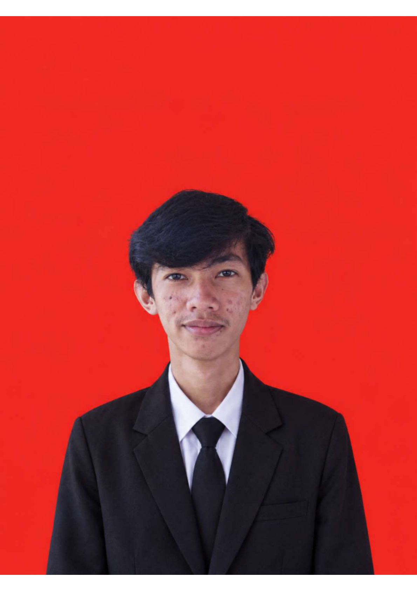
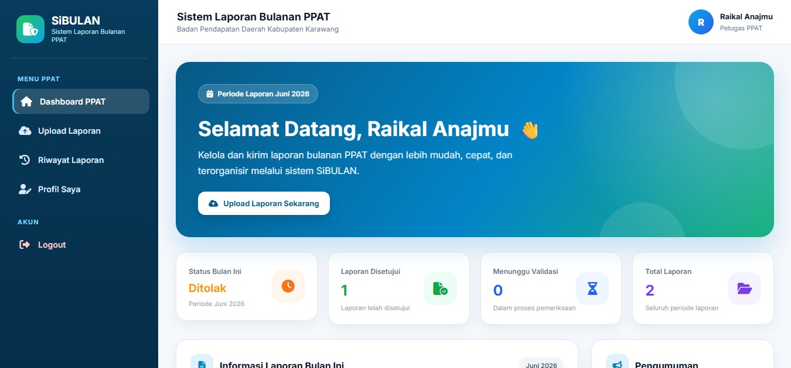
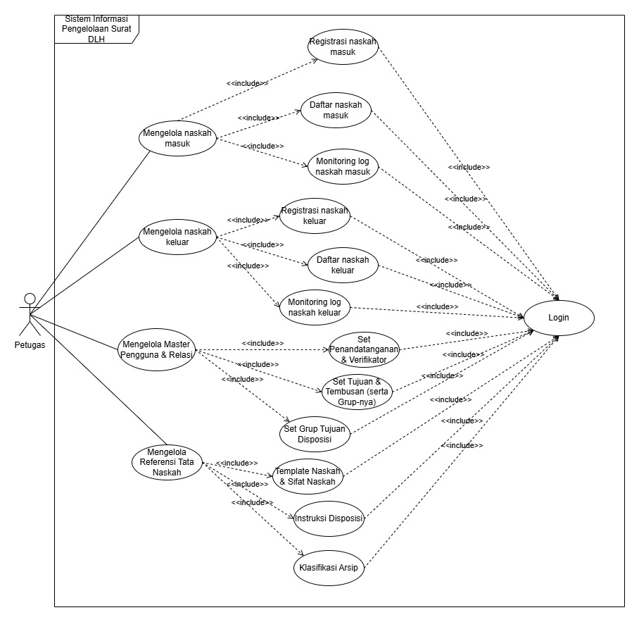
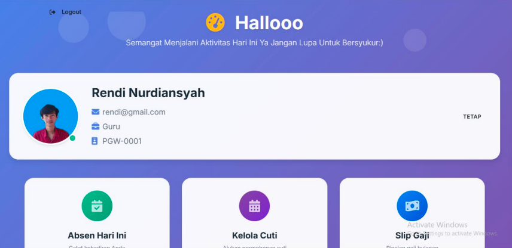

UI/UX Design
Menyusun alur pengguna dan merancang antarmuka yang jelas, konsisten, serta mudah digunakan.
TERBUKA UNTUK PELUANG DAN KOLABORASI
Saya tertarik membangun solusi digital melalui perancangan antarmuka, analisis sistem, dan pengembangan aplikasi web yang fungsional serta mudah digunakan.

01 / TENTANG SAYA
Menghubungkan kebutuhan, desain, dan teknologi menjadi solusi yang bermanfaat.
Saya lulusan D3 Sistem Informasi dari Universitas Bina Sarana Informatika yang memiliki pengalaman magang di bidang administrasi perkantoran. Terbiasa menangani pengelolaan surat menyurat, pengarsipan dokumen dan administrasi harian. Menguasai Microsoft Office dan memiliki pemahaman dasar sistem informasi serta memiliki minat pada bidang analisis sistem.
02 / KEAHLIAN
Menyusun alur pengguna dan merancang antarmuka yang jelas, konsisten, serta mudah digunakan.
Mengidentifikasi kebutuhan dan menggambarkan proses sistem sebagai dasar pengembangan.
Membangun antarmuka dan aplikasi web dengan struktur yang rapi dan fungsional.
Mengenal perancangan basis data dan pengelolaan data untuk kebutuhan aplikasi.
03 / PROYEK PILIHAN
Contoh proyek yang pernah saya kerjakan.

SISTEM INFORMASI
Sistem informasi berbasis web yang dirancang untuk membantu proses pengelolaan laporan bulanan PPAT pada Badan Pendapatan Daerah Kabupaten Karawang.

ANALISIS SISTEM
Melakukan analisis terhadap sistem pengelolaan surat masuk dan surat keluar pada Dinas Lingkungan Hidup Kabupaten Karawang. Analisis berfokus pada proses administrasi naskah dinas, penggunaan aplikasi SRIKANDI, serta identifikasi kendala dalam pengelolaan surat dan pengarsipan dokumen.

PERANCANGAN SISTEM
Perancangan sistem informasi berbasis web yang bertujuan membantu pengelolaan data kepegawaian, proses evaluasi kinerja, serta perhitungan penggajian berdasarkan aturan yang berlaku di lingkungan sekolah dasar.
04 / PENGALAMAN
Mendukung pekerjaan administrasi pada bagian sekretariat, termasuk pengelolaan surat masuk, surat keluar, dan pengarsipan dokumen.
Mempelajari analisis proses bisnis, perancangan sistem informasi, basis data, dan pengembangan aplikasi.
Memiliki pengalaman membantu proses produksi dan bekerja mengikuti alur serta prosedur operasional.
05 / KONTAK
Saya terbuka untuk berdiskusi, belajar, dan menjajaki kesempatan baru.